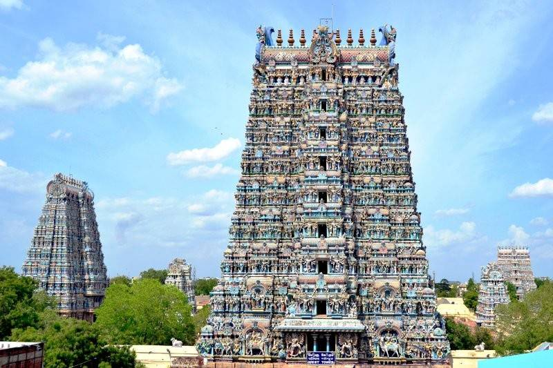

Madurai, Tamil Nadu, India
Goddess Meenakshi
Meenakshi Temple is one of the most famous temples in India. It is known for its magnificent Dravidian architecture and colorful towers.
5:00 AM – 10:00 PM
Traditional Indian attire is preferred.